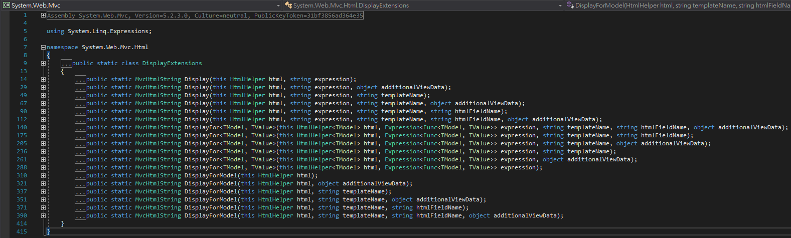
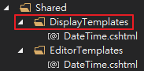
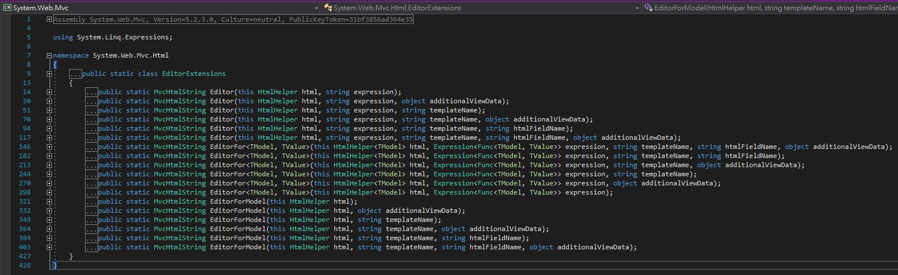
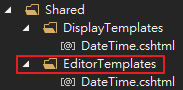
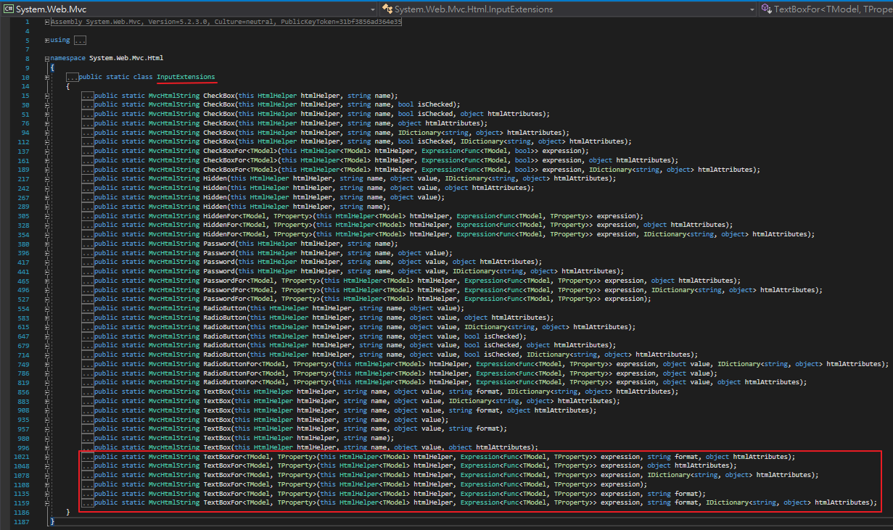
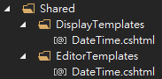
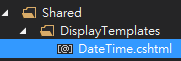
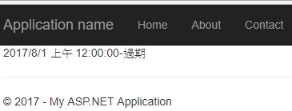
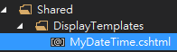
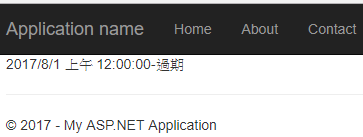

一、什麼是DisplayTemplates與EditorTamplates
其專門用於根據數值的型態、大小而秀出自訂的html樣式。
例如@Html.Display、@Html.DisplayFor、@Html.DisplayForModel方法是屬於DisplayExtensions類別

所以如果要用template技術的話，則他的template資料夾命名為DisplayTemplates

而@Html.Editor、@Html.EditorFor、@Html.EditorForModel方法是屬於EditorExtensions類別

所以如果要用template技術的話，則他的template資料夾命名為EditorTemplates

至於@Html.TextBox、@Html.DropDownList…等等方法也有template技術嗎？

沒辦法，我目前只知道DisplayTemplates與EditorTemplates可應用而已。
二、template的資料夾與檔案命名
DisplayTemplates與EditorTemplates會分開存放，
通常會存放在Shared資料夾下，
命名規則為目錄的名稱結尾須為"s"，
而如果你要處理DateTime型別，則檔案名稱要取DateTime.cshtml，
如下圖

三、範例
程式目的：實作Display部分，為自動判斷時間是否過期、無時間、或即期並替換相對應樣式。
1、首先在於Controller只傳入DateTime當Model，
public ActionResult Index()
{
DateTime DateTime = new DateTime(2017, 8, 1);
return View(DateTime);
}
2、在View使用DisplayFor
@model DateTime?
@Html.DisplayFor(m => m)
3、替DateTime製作專屬樣式
於預設的shared資料夾新增名為DisplayTemplates，
而DisplayTamplates資料夾內新增一個名為DateTime的cshtml檔，如下圖，

而DateTime.cshtml的內容如下
@model DateTime?
@{
var decorate = "";
var retention_period = ""; ;
if (Model.HasValue == false)
{
decorate = "date-none";
retention_period = "標示不明"; ;
}
else
{
if (Model.Value.Date < DateTime.Now.AddDays(-1))
{
decorate = "expired";
retention_period = "過期";
}
else if (Model.Value.Date >= DateTime.Now.AddDays(1))
{
decorate = "no-expired";
retention_period = "未過期";
}
else
{
decorate = "in-24hr-expired";
retention_period = "24小時內過期";
}
}
}
<span class="date @decorate">@Model-@retention_period</span>
4、結果
觀看Html程式碼的確發現樣式已經配發上去了

另外Editor的實作方法跟Display大同小異。
四、呼叫Template方式
呼叫Template方式有N種
1、內建Template：如果專案沒有提供客製化template時，
例如使用@Html.DisplayFor或其他Template時，ASP.NET MVC會使用內建的樣板來替代。
2、樣板名稱符合要處理的型別
如上範例，於View中指定要處理DateTime型別，而Template engine就會一搜尋優先順序自動找到
Shared\DisplayTemplates\DateTime.cshtml樣板。
3、Template名稱直接指定於Metadata中
為了要驗證是否在Metadata加入template名稱也可找到該樣板，
實作範例如下
(1)、於Model新增類別如下
namespace WebApplication1.Models
{
using System;
using System.Collections.Generic;
using System.ComponentModel.DataAnnotations;
public partial class Product
{
public string Id { get; set; }
[UIHint("MyDateTime")]
public Nullable<System.DateTime> date { get; set; }
public Product(string a, DateTime b)
{
Id = a;
date = b;
}
}
}
使用UIHint關鍵字來指定樣板名稱
(2)、Controller傳入簡單模型
using System;
using System.Web.Mvc;
using WebApplication1.Models;
namespace WebApplication1.Controllers
{
public class HomeController : Controller
{
public ActionResult Index()
{
DateTime DateTime = new DateTime(2017, 8, 1);
Product p = new Product("000", DateTime);
return View(p);
}
}
}
(3)、View的樣式為
@model WebApplication1.Models.Product @Html.DisplayFor(m => m.date)
(4)、承第三項範例，只把樣板名稱改名來驗證來是否可以找到該樣板

(5)、結果
結果還是有效有找到的

4、透過@Html.DisplayFor()指定參數找到該樣板
例如於View指定
@model WebApplication1.Models.Product @Html.DisplayFor(m => m.date, "MyDateTime")
參考資料：